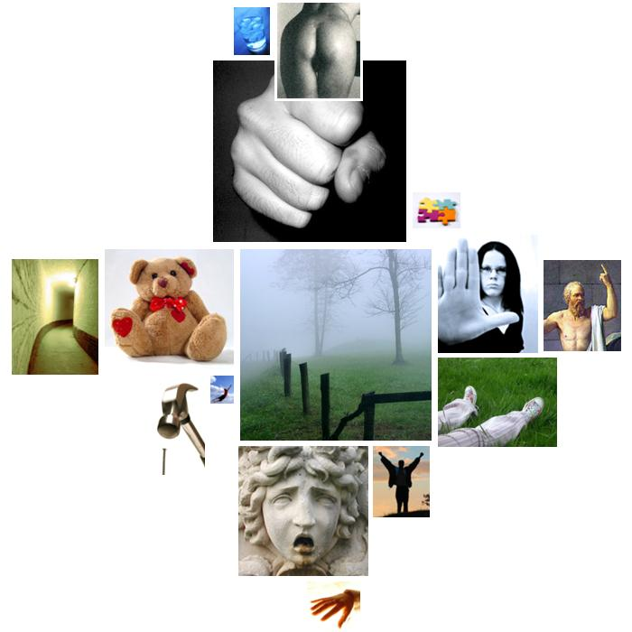

mccain.txt
  diffusion
diffusion clouds, vaguely, mistakes, shadowy, uncertain, mistake, uncertainty
 aggression
aggression strangled, war, war, threat, enemies, war, fight, disputing, fight, enemies, weapons, war, struggle, cruel, enemies, doubt, war, wars, fight, war, enemy, destroyed, hostile, anger, attacked, tyrants, disagreements, war, doubt, war, combat, threatens, struggle, doubt, doubt, defeat, scourge, afflicts, war, damaged, war, conflict, war, war, war, battlefield, threats, threatened, anger, fight, enemies, fight, enemies, injuring, destroying, critical, attack, bloody, criticize, war, critics, attacks, war, war, threat, critics, cruelty, torture, destroyed, weapons, threat, weapons, threat, destruction, destroying, fight, stability, fight, hateful, war, hate, enemies, destroy, disagreement, arguing, argument, argue, enemies, war, enemy, fight, hatred, fight, fight
 sadness
sadness despair, sorrow, disappointed, suffer, mourning, sadness
 affection
affection grateful, love, like, pitiless, friends, friends, friends, friend, friends, friends, dearly, dear, friends, friends, love, love, love, friends, friends, love, love, love
 restraint
restraint summons, determined, necessity, must, must, must, must, must, must, must, must, obligation, summon, limited, refusal, prisons, necessary, determination, determination, necessary
 passivity
passivity security, serenity, safe, safe, secure, security, safe, rest, rest, yield, security, tranquility, secure, yield
 unknown
unknown strangled, mysterious, indescribable
 anality
anality defiles
 moral_imperative
moral_imperative privilege, moral, respect, honorable, right, should, virtue, birthright, responsibility, should, responsibility, should, should, right, rights, rightly, honor, right, should, privilege, should, should, justice
 hard
hard hard, solidarity, harder, hard
 glory
glory great, greatness, rich, greatest, great, victory, victory, hero, noble, admiration, triumphs, greater, heroism, heroically, great, great, superiority, superiority
 touch
touch rubble
 cold
cold freeze, cold
 abstraction
abstraction truly, weigh, resolve, purpose, relevance, comprehended, plans, determined, resolve, learn, mistakes, ideals, different, differences, idea, them, important, important, reason, believes, cause, why, distinction, knew, resolve, them, effectively, them, believe, choice, decided, choice, otherwise, certainly, believe, fact, them, them, may, importantly, may, known, may, believe, determination, resolve, resolve, them, important, determination, choices, may, mistake, may, them, possible, history, belief, provoke, belief, cause, differences, real, knowledge, ideals, them, causes
 descent
descent fellow, fall, fallen, fellow